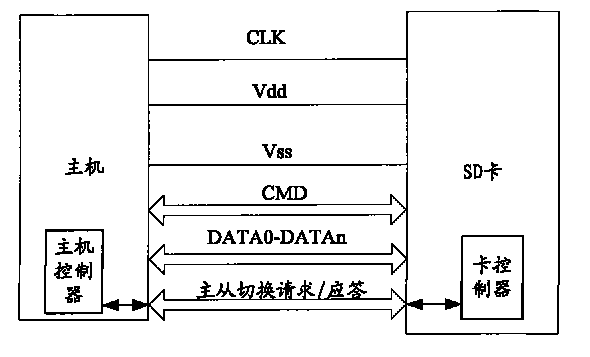

发明名称--支持主从设备互换的移动存储器和主从设备互换方法
| 申请号 | CN200810104175.1 | 申请日 | 2008.04.16 | ||
| 公开（公告）号 | CN101251831A | 公开（公告）日 | 2008.08.27 | ||
| IPC分类号 | G06F13/16 | 申请（专利权）人 | 普天信息技术研究院有限公司; | ||
| 发明人 | 曹会扬;姜涌;杨光敏; | 优先权号 |
摘要:
本发明公开了一种支持主从设备互换的移动存储器，包括接口和卡控制器，所述接口包括主从设备切换请求/应答复用信号线；所述卡控制器用于向所述主从设备切换请求/应答复用信号线发送主从设备切换请求，并接收来自所述主从设备切换请求/应答复用信号线的主从设备切换应答，获取对移动存储器总线的控制权。本发明还公开了一种主从设备互换的方法，本发明方案可以提高移动存储器主机接口总线的利用率，增强移动存储器访问主机接口总线的灵活性。
摘要附图:
